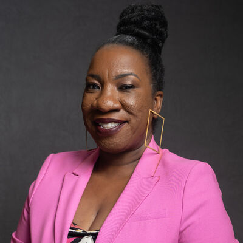
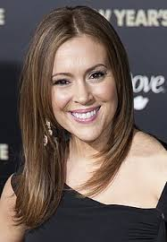

Tarana Burk - aktivistkinja i žrtva seksualnog zlostavljanja

Alisa Milano - američka glumica i aktivistkinja

Ideologija feminizma, koja promoviše ravnopravnost polova, značajno se promijenila tokom vremena.
Feminizam je i danas jednako relevantan kao i uvijek, uprkos značajnim dostignućima ranijih feminističkih pokreta.
Trenutno stanje feminizma naglašava dostignuća, poteškoće i kontinuiranu borbu za ravnopravnost polova u modernom društvu.
Danas su nasilje, uznemiravanje i diskriminacija na osnovu pola šire prepoznati, zahvaljujući feminizmu.
Na primjer, pokret #MeToo dao je preživjelima glas i pokrenuo razgovore o pristanku i odgovornosti.
Bitno je prihvatiti intersekcionalnost i priznati raznolikost ženskih iskustava. Specifični problemi koje doživljavaju žene različitih rasa, sposobnosti i socioekonomskog porijekla moraju se rješavati kao dio inkluzivnog feminizma. Razumijevanje šta feminizam zapravo podrazumijeva je ključno; feminizam je stav u kojem se neko zalaže za sebe i potvrđuje svoje pravo da govori u svoje ime, da slobodno bira i uživa u slobodi.
Nedovoljna zastupljenost žena na vodećim pozicijama, posebno u upravnim odborima kompanija i vladinim institucijama, i dalje predstavlja problem. Ova nedovoljna zastupljenost ometa unapređenje ravnopravnosti polova. Intersekcionalnost je glavni koncept u modernom feminizmu, koji prepoznaje veze između mnogih oblika tlačenja, kao što su diskriminacija na osnovu rase, klase i pola. Feministički pokret neprestano radi na pronalaženju rješenja za jedinstvene probleme s kojima se suočavaju potlačene grupe.
Ovi problemi su se pokazali upornim uprkos godinama priznavanja. Organizacije danas rutinski zapošljavaju službenike za raznolikost, izdaju javne deklaracije u kojima cijene raznolikost i provode inicijative za unapređenje karijere žena. Ali prečesto ove inicijative pripisuju porijeklo problema - a time i njegovo rješenje - ženama i njihovim vlastitim postupcima. Kao rezultat toga, iako inicijative poput mentorstva i razvoja vještina mogu biti korisne na neki način i dobronamjerne, one često zanemaruju rješavanje širih aspekata sistema koji nesrazmjerno favorizuju muškarce.
Današnji feministički pokret balansira između razvoja i teškoća. Čak i uz veliki napredak postignut u smjeru ravnopravnosti polova, još mnogo toga predstoji. Moderni feminizam naglašava potrebu za prepoznavanjem mnogih iskustava žena, zalaganjem za zakonodavne reforme i pomaganjem preživjelima. Možemo stvoriti društvo koje je pravednije i ravnopravnije za ljude svih polova vodeći stalne borbe za jednakost na svim frontovima i usvajajući inkluzivni način razmišljanja. Feminizam je i dalje ključan za uspostavljanje obećavajuće budućnosti.
#MeToo pokret je društveni pokret protivseksualnog zlostavljanja i seksualnog uznemiravanja gdje ljudi objavljuju
navode o seksualnim zločinima koje su počinili moćni i/ili istaknuti muškarci.
Fraza "Me Too" je prvobitno bila korištena u ovom kontekstu 2006. godine na društvenim mrežama, od strane aktivistkinje i žrtve
seksualnog zlostavljanja Tarane Burk.
#MeToo se koristio od 2017. godine kao način da se skrene pažnja na veličinu problema. #MeToo osnažuje one koji su bili seksualno napadnuti,
kroz empatiju i solidarnost.
U oktobru 2017. godine, Alisa Milano je ohrabrila korištenje ove fraze kroz heštag ako bi pomogla u otkrivanju obima problema seksualnih napada tako što je pokazala koliko je qudi lično iskusilo ove događaje, podstičući žene da govore o svojim zlostavljanjima, znajući da nisu same. Fraza #MeToo se proširila i prevela na desetine drugih jezika. Tarana Burk prihvatila je ulogu "vođe" ali je za sebe izjavila da je "radnica". Tarana je izjavila i da se pokret proširio i na muškarce i na žene različitih boja i uzrasta.